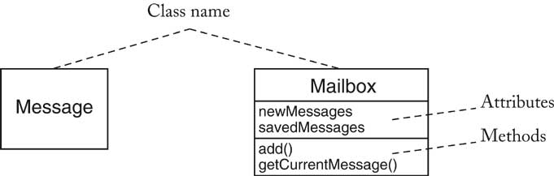
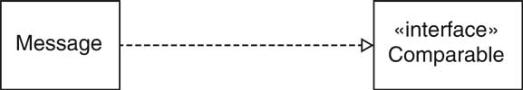
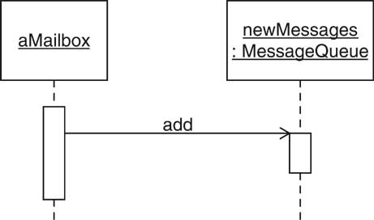
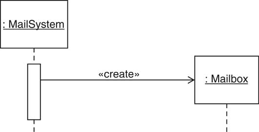
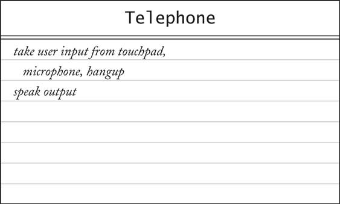
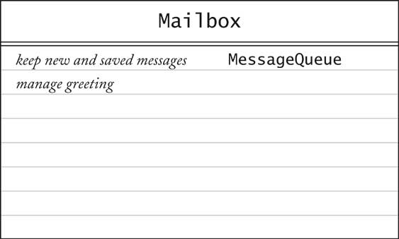

Object-Oriented Design & Patterns
Cay S. Horstmann
Chapter 2
The Object-Oriented Design Process

Chapter Topics
- From Problem to Code
- The Object and Class Concepts
- Identifying Classes
- Identifying Responsibilities
- Relationships Between Classes
- Use Cases
- CRC Cards
- UML Class Diagrams
- Sequence Diagrams
- State Diagrams
- Using javadoc for Design Documentation
- Case Study: A Voice Mail System
From Problem to Code
Three Phases:
- Analysis
- Design
- Implementation
Case Study: Voice Mail System
Analysis Phase
Functional Specification
- Completely defines tasks to be solved
- Free from internal contradictions
- Readable both by domain experts and software developers
- Reviewable by diverse interested parties
- Testable against reality
Design Phase
Goals
- Identify classes
- Identify behavior of classes
- Identify relationships among classes
Artifacts
- Textual description of classes and key methods
- Diagrams of class relationships
- Diagrams of important usage scenarios
- State diagrams for objects with rich state
Implementation Phase
- Implement and test classes
- Combine classes into program
- Avoid "big bang" integration
- Prototypes can be very useful
Object and Class Concepts
- Object: Three characteristic concepts
- Class: Collection of similar objects
Identifying Classes
Rule of thumb: Look for nouns in problem description
- Mailbox
- Message
- User
- Passcode
- Extension
- Menu
Identifying Classes
Focus on concepts, not implementation
- MessageQueue stores messages
- Don't worry yet how the queue is implemented
Categories of Classes
- Tangible Things
- Agents
- Events and Transactions
- Users and Roles
- Systems
- System interfaces and devices
- Foundational Classes
Identifying Responsibilities
Rule of thumb: Look for verbs in problem description
Behavior of MessageQueue:
- Add message to tail
- Remove message from head
- Test whether queue is empty
Responsibilities
- OO Principle: Every operation is the responsibility of a single
class
- Example: Add message to mailbox
- Who is responsible: Message or Mailbox?
Class Relationships
- Dependency ("uses")
- Aggregation ("has")
- Inheritance ("is")
Dependency Relationship
- C depends on D: Method of C
manipulates objects of D
- Example: Mailbox depends on Message
- If C doesn't use D, then C
can be developed without knowing about D
Coupling
Aggregation
- Object of a class contains objects of another class
- Example: MessageQueue aggregates Messages
- Example: Mailbox aggregates MessageQueue
- Implemented through instance fields
Multiplicities
Inheritance
- More general class = superclass
- More specialized class = subclass
- Subclass supports all method interfaces of superclass (but
implementations may differ)
- Subclass may have added methods, added state
- Subclass inherits from superclass
- Example: ForwardedMessage inherits from Message
- Example: Greeting does not inherit from Message
(Can't store greetings in mailbox)
Use Cases
- Analysis technique
- Each use case focuses on a specific scenario
- Use case = sequence of actions
- Action = interaction between actor and computer system
- Each action yields a result
- Each result has a value to one of the actors
- Use variations for exceptional situations
Sample Use Case
Leave a Message
- Caller dials main number of voice mail system
- System speaks prompt
Enter mailbox number followed by #
- User types extension number
- System speaks
You have reached mailbox xxxx. Please leave a message now
- Caller speaks message
- Caller hangs up
- System places message in mailbox
Sample Use Case -- Variations
Variation #1
1.1. In step 3, user enters invalid extension number
1.2. Voice mail system speaks
You have typed an invalid mailbox number.
1.3. Continue with step 2.
Variation #2
2.1. After step 4, caller hangs up instead of speaking message
2.3. Voice mail system discards empty message
CRC Cards
- CRC = Classes, Responsibilities, Collaborators
- Developed by Beck and Cunningham
- Use an index card for each class
- Class name on top of card
- Responsibilities on left
- Collaborators on right
CRC Cards

CRC Cards
- Responsibilities should be high level
- 1 - 3 responsibilities per card
- Collaborators are for the class, not for each responsibility
Walkthroughs
- Use case: "Leave a message"
- Caller connects to voice mail system
- Caller dials extension number
- "Someone" must locate mailbox
- Neither Mailbox nor Message can do this
- New class: MailSystem
- Responsibility: manage mailboxes
Walkthroughs

UML Diagrams
- UML = Unified Modeling Language
- Unifies notations developed by the "3 Amigos" Booch, Rumbaugh,
Jacobson
- Many diagram types
- We'll use three types:
- Class Diagrams
- Sequence Diagrams
- State Diagrams
Class Diagrams
- Rectangle with class name
- Optional compartments
- Include only key attributes and methods
Class Diagrams

Class Relationships
Multiplicities
- any number (0 or more): *
- one or more: 1..*
- zero or one: 0..1
- exactly one: 1

Composition
- Special form of aggregation
- Contained objects don't exist outside container
- Example: message queues permanently contained in mail box

Association
- Some designers don't like aggregation
- More general association relationship
- Association can have roles

Association
- Some associations are bidirectional
Can navigate from either class to the other
- Example: Course has set of students, student has set of courses
- Some associations are directed
Navigation is unidirectional
- Example: Message doesn't know about message queue containing it

Interface Types
- Interface type describes a set of methods
- No implementation, no state
- Class implements interface if it implements its methods
- In UML, use stereotype «interface»

Tips
- Use UML to inform, not to impress
- Don't draw a single monster diagram
- Each diagram must have a specific purpose
- Omit inessential details
Sequence Diagrams
- Each diagram shows dynamics of scenario
- Object diagram: class name underlined

Self call

Object Construction

State Diagram
- Use for classes whose objects have interesting states
Design Documentation
Case Study: Voice Mail System
- Use text for voice, phone keys, hangup
- 1 2 ... 0 # on a single line means key
- H on a single line means "hang up"
- All other inputs mean voice
- In GUI program, will use buttons for keys (see ch. 5)
Use Case: Reach an Extension
- User dials main number of system
- System speaks prompt
Enter mailbox number followed by #
- User types extension number
- System speaks
You have reached mailbox xxxx. Please leave a message now
Use Case: Leave a Message
- Caller carries out Reach an Extension
- Caller speaks message
- Caller hangs up
- System places message in mailbox
Use Case: Log in
- Mailbox owner carries out Reach an Extension
- Mailbox owner types password and #
(Default password = mailbox number. To change, see Change
the Passcode)
- System plays mailbox menu:
Enter 1 to retrieve your messages.
Enter 2 to change your passcode.
Enter 3 to change your greeting.
Use Case: Retrieve Messages
- Mailbox owner carries out Log in
- Mailbox owner selects "retrieve messages" menu option
- System plays message menu:
Press 1 to listen to the current message
Press 2 to delete the current message
Press 3 to save the current message
Press 4 to return to the mailbox menu
- Mailbox owner selects "listen to current message"
- System plays current new message, or, if no more new messages,
current old message.
Note: Message is played, not removed from queue
- System plays message menu
- User selects "delete current message". Message is removed.
- Continue with step 3.
Use Case: Retrieve Messages
Variation #1
1.1. Start at Step 6
1.2. User selects "save current message".
Message is removed from new queue
and appended to old queue
1.3. Continue with step 3.
Use Case: Change the Greeting
- Mailbox owner carries out Log in
- Mailbox owner selects "change greeting" menu option
- Mailbox owner speaks new greeting
- Mailbox owner presses #
- System sets new greeting
Use Case: Change the Greeting
Variation #1: Hang up before confirmation
1.1. Start at step 3.
1.2. Mailbox owner hangs up.
1.3. System keeps old greeting.
Use Case: Change the Passcode
- Mailbox owner carries out Log in
- Mailbox owner selects "change passcode" menu option
- Mailbox owner dials new passcode
- Mailbox owner presses #
- System sets new passcode
Use Case: Change the Passcode
Variation #1: Hang up before confirmation
1.1. Start at step 3.
1.2. Mailbox owner hangs up.
1.3. System keeps old passcode.
CRC Cards for Voice Mail System
Some obvious classes
- Mailbox
- Message
- MailSystem
Initial CRC Cards: Mailbox
Initial CRC Cards: MessageQueue

Initial CRC Cards: MailSystem

Telephone
- Who interacts with user?
- Telephone takes button presses, voice input
- Telephone speaks output to user
Telephone

Connection
- With whom does Telephone communicate
- With MailSystem?
- What if there are multiple telephones?
- Each connection can be in different state
(dialing, recording, retrieving messages,...)
- Should mail system keep track of all connection states?
- Better to give this responsibility to a new class
Connection

Analyze Use Case: Leave a message
- User dials extension. Telephone sends number to Connection
(Add collaborator Connection to Telephone)
- Connection asks MailSystem to find matching Mailbox
- Connection asks Mailbox for greeting
(Add responsibility "manage greeting" to Mailbox,
add collaborator Mailbox to Connection)
- Connection asks Telephone to play greeting
- User speaks message. Telephone asks Connection
to record it.
(Add responsibility "record voice input" to Connection)
- User hangs up. Telephone notifies Connection.
- Connection constructs Message
(Add card for Message class,
add collaborator Message to Connection)
- Connection adds Message to Mailbox
Result of Use Case Analysis

Result of Use Case Analysis
Result of Use Case Analysis

Result of Use Case Analysis

Analyse Use Case: Retrieve messages
- User types in passcode. Telephone notifies Connection
- Connection asks Mailbox to check passcode.
(Add responsibility "manage passcode" to Mailbox)
- Connection sets current mailbox and asks Telephone
to speak menu
- User selects "retrieve messages". Telephone passes key
to Connection
- Connection asks Telephone to speak menu
- User selects "listen to current message". Telephone
passes key to Connection
- Connection gets first message from current mailbox.
(Add "retrieve messages" to responsibility of Mailbox).
Connection asks Telephone to speak message
- Connection asks Telephone to speak menu
- User selects "save current message". Telephone passes
key to Connection
- Connection tells Mailbox to save message
(Modify responsibility of Mailbox to "retrieve,save,delete
messages")
- Connection asks Telephone to speak menu
Result of Use Case Analysis

CRC Summary
- One card per class
- Responsibilities at high level
- Use scenario walkthroughs to fill in cards
- Usually, the first design isn't perfect.
(You just saw the author's third design of the mail system)
UML Class Diagram for Mail System
- CRC collaborators yield dependencies
- Mailbox depends on MessageQueue
- Message doesn't depends on Mailbox
- Connection depends on Telephone, MailSystem,
Message, Mailbox
- Telephone depends on Connection
Dependency Relationships
Aggregation Relationships
- A mail system has mailboxes
- A mailbox has two message queues
- A message queue has some number of messages
- A connection has a current mailbox.
- A connection has references to a mailsystem and a telephone
UML Class Diagram for Voice Mail System
Sequence Diagram for Use Case: Leave a message

Interpreting a Sequence Diagram
- Each key press results in separate call to dial, but
only one is shown
- Connection wants to get greeting to play
- Each mailbox knows its greeting
- Connection must find mailbox object:
Call findMailbox on MailSystem object
- Parameters are not displayed (e.g. mailbox number)
- Return values are not displayed (e.g. found mailbox)
- Note that connection holds on to that mailbox over multiple calls
Sequence Diagram for Use Case: Retrieve messages
Connection State Diagram

Java Implementation